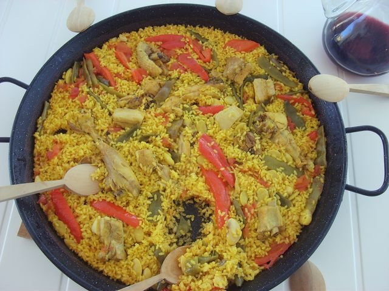

Paella Valenciana

Description
Traditional rice dish served in the Valencia region of Spain. The rice is simmered in meat juices
and as a finishing touch a layer on the bottom of the dish is charred to create a savory and crispy crust.
Ingredients
- 1 tablespoon olive oil
- ½ (4 pound) whole chicken, cut into 6 pieces
- ½ (2 pound) rabbit, cleaned and cut into pieces
- 1 head garlic, cloves separated and peeled
- 1 tomato, finely chopped
- 1 (15.5 ounce) can butter beans
- ½ (10 ounce) package frozen green peas
- ½ (10 ounce) package frozen green beans
- salt to taste
- 1 teaspoon mild paprika, or to taste
- 1 pinch saffron threads
- 1 pinch dried thyme to taste
- 1 pinch dried rosemary to taste
- 4 cups short-grain white rice, such as bomba, Valencia or arborio
Directions
- Heat a paella pan over medium-high heat, and coat with olive oil. Add the chicken, rabbit and garlic; cook and stir until nicely browned. Move the browned meat to the sides of the pan, and add the tomato, butter beans, peas, and green beans. Season with paprika, and mix well.
- Fill the paella pan almost to the top with water, measuring the water as you put it in. This is to help you to determine how much rice to add, as paella pans come in different sizes. Bring to a boil. Simmer for about 1 hour to make a nice broth.
- Season with a generous amount of salt, and just enough saffron to make a nice yellow color. Season with thyme and rosemary if desired. The goal is to make a rich-tasting broth that will soak into the rice to make it delicious. Stir in half as much rice as the amount of water in the pan. Cover, reduce heat to low, and simmer until all of the liquid has been absorbed, about 20 minutes.